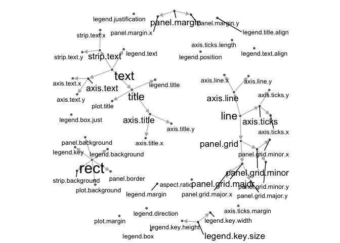

geomnet is a package built on top of the most recent major ggplot2 release. It provides a ggplot2 geom called geom_net to visualize graphs and networks. It also include the function stat_net to calculate network layouts with the sna package. Finally, the function geom_circle is included to draw circles using ggplot2.
You can install geomnet directly from CRAN install.packages('geomnet') or from Github devtools::install_github("sctyner/geomnet")
Examples
ggplot2 Theme Elements
This example shows the theme inheritance properties of the theme elements of ggplot2. Note: this example has not been updated since the release of ggplot2 2.2.0 and as such the content may have changed.
library(dplyr) library(geomnet) data(theme_elements) # data step TEnet <- fortify(as.edgedf(theme_elements$edges[,c("parent", "child")]), theme_elements$vertices) # create a degree variable for use later TEnet <- TEnet %>% group_by(from_id) %>% mutate(degree = sqrt(10 * n() + 1)) # plot ggplot(data = TEnet, aes(from_id = from_id, to_id = to_id)) + geom_net(layout.alg = "fruchtermanreingold", aes(fontsize = degree), directed = TRUE, labelon = TRUE, size = 1, labelcolour = 'black', ecolour = "grey70", arrowsize = 0.5, linewidth = 0.5, repel = TRUE) + theme_net() + xlim(c(-0.05, 1.05))

Blood Donation Diagram
In this example, we reimagine the traditional blood donation diagram as a directed network. Arrows point to the blood type that receives. This example provides two data frames to geom_net().
library(geomnet) data(blood) ggplot(data = blood$edges, aes(from_id = from, to_id = to)) + geom_net(colour = "darkred", layout.alg = "circle", labelon = TRUE, size = 15, directed = TRUE, vjust = 0.5, labelcolour = "grey80", arrowsize = 1.5, linewidth = 0.5, arrowgap = 0.05, selfloops = TRUE, ecolour = "grey40") + theme_net()

Harry Potter Peer Support Network
In this fun example from this website, there is a tie between two students if one provides emotional support to the other at some point in the book. It is a directed network, so in the visualization, the arrow points to the student receiving support.
library(geomnet) head(hp.edges) #> name1 name2 book #> 1 Dean Thomas Harry James Potter 1 #> 2 Dean Thomas Hermione Granger 1 #> 3 Dean Thomas Neville Longbottom 1 #> 4 Dean Thomas Ronald Weasley 1 #> 5 Dean Thomas Seamus Finnigan 1 #> 6 Fred Weasley George Weasley 1 head(hp.chars) #> name schoolyear gender house #> 1 Adrian Pucey 1989 M Slytherin #> 2 Alicia Spinnet 1989 F Gryffindor #> 3 Angelina Johnson 1989 F Gryffindor #> 4 Anthony Goldstein 1991 M Ravenclaw #> 5 Blaise Zabini 1991 M Slytherin #> 6 C. Warrington 1989 M Slytherin hp.all <- fortify(as.edgedf(hp.edges), hp.chars, group = "book") #> Using name1 as the from node column and name2 as the to node column. #> If this is not correct, rewrite dat so that the first 2 columns are from and to node, respectively. #> Joining edge and node information by from_id and name respectively. # only plot the characters with any connections in a given book. ggplot(data=hp.all, aes(from_id = from, to_id = to_id)) + geom_net(fiteach=T, directed = T, size = 3, linewidth = .5, ealpha = .5, labelon = T, fontsize = 3, repel = T, labelcolour = "black", arrowsize = .5, singletons = FALSE, aes(colour = house, group = house, shape = gender)) + scale_colour_manual(values = c("#941B08","#F1F31C", "#071A80", "#154C07")) + facet_wrap(~book, labeller = "label_both") + theme_net() + theme(panel.background = element_rect(colour = 'black'))

Interactivity with plotly!
Now including interactivity with ggplotly()!
# blood donation example library(geomnet) # devtools::install_github("ropensci/plotly") library(plotly) data(blood) bloodnet <- fortify(as.edgedf(blood$edges), blood$vertices) p <- ggplot(data = bloodnet, aes(from_id = from_id, to_id = to_id)) # create data plot p2 <- p + geom_net(aes(size=Predominance, colour=type, shape=rho, linetype=group_to), linewidth=0.75, labelon =TRUE, directed = TRUE, labelcolour="black") + facet_wrap(~Ethnicity) + scale_colour_brewer(palette="Set2") ggplotly(p2) %>% hide_legend() # Classic College Football Example data("football") # data step: merge vertices and edges ftnet <- fortify(as.edgedf(football$edges), football$vertices) # create data plot gg <- ggplot(data = ftnet, aes(from_id = from_id, to_id = to_id)) + geom_net(layout.alg = 'fruchtermanreingold', aes(colour = value, group = value, linetype = factor(same.conf != 1)), linewidth = 0.5, size = 5, vjust = -0.75, alpha = 0.3) + theme_net() + theme(legend.position = "bottom") + scale_colour_brewer("Conference", palette = "Paired") + guides(linetype = FALSE) ggplotly(gg)